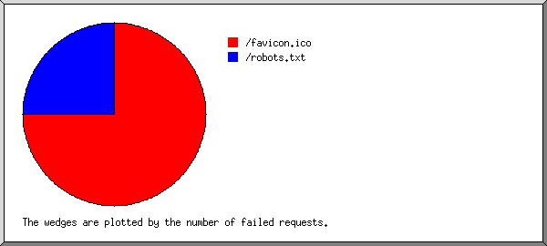

(Go To: Top: General Summary: Daily Report: Daily Summary: Hourly Summary: Organisation Report: Referrer Report: Search Word Report: Browser Summary: Operating System Report: Status Code Report: File Size Report: File Type Report: Directory Report: Failure Report: Request Report)
This report contains overall statistics.
Successful requests: 568
Average successful requests per day: 110
Successful requests for pages: 47
Average successful requests for pages per day: 8
Failed requests: 10
Distinct files requested: 18
Distinct hosts served: 42
Data transferred: 25.602 megabytes
Average data transferred per day: 4.981 megabytes
(Go To: Top: General Summary: Daily Report: Daily Summary: Hourly Summary: Organisation Report: Referrer Report: Search Word Report: Browser Summary: Operating System Report: Status Code Report: File Size Report: File Type Report: Directory Report: Failure Report: Request Report)
This report lists the activity in each day.
Each unit ( ) represents 1 request
for a page.
) represents 1 request
for a page.
date: reqs: pages: Mbytes: ---------: ----: -----: -------: 25/Jul/05: 79: 8: 3.935:Busiest day: 27/Jul/05 (16 requests for pages).26/Jul/05: 67: 4: 3.606:
27/Jul/05: 188: 16: 7.738:
28/Jul/05: 105: 10: 4.541:
29/Jul/05: 75: 6: 2.913:

(Go To: Top: General Summary: Daily Report: Daily Summary: Hourly Summary: Organisation Report: Referrer Report: Search Word Report: Browser Summary: Operating System Report: Status Code Report: File Size Report: File Type Report: Directory Report: Failure Report: Request Report)
This report lists the total activity for each day of the week, summed over all the weeks in the report.
Each unit ( ) represents 1 request
for a page.
) represents 1 request
for a page.
day: reqs: pages: ---: ----: -----: Sun: 0: 0: Mon: 79: 8:
(Go To: Top: General Summary: Daily Report: Daily Summary: Hourly Summary: Organisation Report: Referrer Report: Search Word Report: Browser Summary: Operating System Report: Status Code Report: File Size Report: File Type Report: Directory Report: Failure Report: Request Report)
This report lists the total activity for each hour of the day, summed over all the days in the report.
Each unit ( ) represents 1 request
for a page.
) represents 1 request
for a page.
hour: reqs: pages: ----: ----: -----: 0: 18: 1:
(Go To: Top: General Summary: Daily Report: Daily Summary: Hourly Summary: Organisation Report: Referrer Report: Search Word Report: Browser Summary: Operating System Report: Status Code Report: File Size Report: File Type Report: Directory Report: Failure Report: Request Report)
This report lists the organisations of the computers which requested files.

Listing the top 20 organisations by the number of requests, sorted by the number of requests.
reqs: %bytes: organisation ----: ------: ------------ 36: 3.73%: 81.72 36: 3.73%: 24.17 36: 7.47%: 80.58 36: 3.73%: 24.106 18: 3.73%: 12 18: 3.73%: 216.165 18: 3.73%: 81.0 18: 3.73%: 209.177 18: 3.73%: 193.229 18: : 64.89 18: 3.73%: 80.6 18: 3.73%: 24.157 18: 3.73%: 24.16 18: 3.73%: 216.254 18: 3.73%: 68.18 18: 3.73%: 83 18: 3.73%: 84 18: 3.73%: 85 18: 3.73%: 63.241 18: 3.73%: 67.104 136: 25.35%: [not listed: 19 organisations]
(Go To: Top: General Summary: Daily Report: Daily Summary: Hourly Summary: Organisation Report: Referrer Report: Search Word Report: Browser Summary: Operating System Report: Status Code Report: File Size Report: File Type Report: Directory Report: Failure Report: Request Report)
This report lists the referrers (where people followed links from, or pages which included this site's images).

Listing referring URLs with at least 20 requests, sorted by the number of requests.
reqs: URL ----: --- 485: http://www.performanceapex.com/ 31: [not listed: 15 URLs]
(Go To: Top: General Summary: Daily Report: Daily Summary: Hourly Summary: Organisation Report: Referrer Report: Search Word Report: Browser Summary: Operating System Report: Status Code Report: File Size Report: File Type Report: Directory Report: Failure Report: Request Report)
This report lists which words people used in search engines to find the site.

Listing query words, sorted by the number of requests.
reqs: search term ----: ----------- 8: fiat 4: 124 3: spyder 3: performance 2: parts 2: 850 2: scca 2: apex 2: lancia 2: and 1: cams 1: transmissions 1: port 1: sportster 1: engine 1: conversion 1: mr 1: high 1: valves 1: x/19 1: cylinder 1: head 1: renton 1: megasquirt 1: positano 1: stainless 1: polish
(Go To: Top: General Summary: Daily Report: Daily Summary: Hourly Summary: Organisation Report: Referrer Report: Search Word Report: Browser Summary: Operating System Report: Status Code Report: File Size Report: File Type Report: Directory Report: Failure Report: Request Report)
This report lists the vendors of visitors' browsers.

Listing browsers with at least 1 request for a page, sorted by the number of requests for pages.
no.: reqs: pages: browser ---: ----: -----: ------- 1: 466: 31: MSIE : 430: 29: MSIE/6 : 36: 2: MSIE/5 2: 90: 5: Netscape : 90: 5: Mozilla/1 3: 2: 2: DomainsDB.net MetaCrawler v.0.9.7b (http: : 2: 2: DomainsDB.net MetaCrawler v.0.9.7b (http://domainsdb 4: 2: 2: Konqueror : 2: 2: Konqueror/3 5: 1: 1: DomainsDB.net MetaCrawler v.0.9.7c (http: : 1: 1: DomainsDB.net MetaCrawler v.0.9.7c (http://domainsdb 6: 1: 1: Googlebot : 1: 1: Googlebot/2 7: 1: 1: SurveyBot : 1: 1: SurveyBot/2 8: 2: 1: Netscape (compatible)
(Go To: Top: General Summary: Daily Report: Daily Summary: Hourly Summary: Organisation Report: Referrer Report: Search Word Report: Browser Summary: Operating System Report: Status Code Report: File Size Report: File Type Report: Directory Report: Failure Report: Request Report)
This report lists the operating systems used by visitors.

Listing operating systems, sorted by the number of requests for pages.
no.: reqs: pages: OS ---: ----: -----: -- 1: 520: 34: Windows : 319: 22: Windows XP : 108: 6: Windows 2000 : 72: 4: Unknown Windows : 21: 2: Windows 98 2: 4: 4: Known robots 3: 20: 3: Unix : 20: 3: Linux 4: 3: 2: OS unknown 5: 18: 1: Macintosh : 18: 1: Macintosh PowerPC
(Go To: Top: General Summary: Daily Report: Daily Summary: Hourly Summary: Organisation Report: Referrer Report: Search Word Report: Browser Summary: Operating System Report: Status Code Report: File Size Report: File Type Report: Directory Report: Failure Report: Request Report)
This report lists the HTTP status codes of all requests.

Listing status codes, sorted numerically.
reqs: status code ----: ----------- 497: 200 OK 2: 206 Partial content 69: 304 Not modified since last retrieval 10: 404 Document not found
(Go To: Top: General Summary: Daily Report: Daily Summary: Hourly Summary: Organisation Report: Referrer Report: Search Word Report: Browser Summary: Operating System Report: Status Code Report: File Size Report: File Type Report: Directory Report: Failure Report: Request Report)
This report lists the sizes of files.

size: reqs: pages: Mbytes:
-----------: ----: -----: -------:
0: 77: 8: 0.000:
1b- 10b: 0: 0: 0.000:
11b- 100b: 0: 0: 0.000:
101b- 1kb: 0: 0: 0.000:
1kb- 10kb: 56: 1: 0.502:
10kb-100kb: 381: 38: 15.024:
100kb- 1Mb: 54: 0: 10.075:
(Go To: Top: General Summary: Daily Report: Daily Summary: Hourly Summary: Organisation Report: Referrer Report: Search Word Report: Browser Summary: Operating System Report: Status Code Report: File Size Report: File Type Report: Directory Report: Failure Report: Request Report)
This report lists the extensions of requested files.

Listing extensions with at least 0.1% of the traffic, sorted by the amount of traffic.
reqs: %bytes: extension ----: ------: --------- 429: 57.68%: .jpg [JPEG graphics] 63: 39.48%: .JPG 47: 1.98%: [directories] 29: 0.87%: .gif [GIF graphics]
(Go To: Top: General Summary: Daily Report: Daily Summary: Hourly Summary: Organisation Report: Referrer Report: Search Word Report: Browser Summary: Operating System Report: Status Code Report: File Size Report: File Type Report: Directory Report: Failure Report: Request Report)
This report lists the directories from which files were requested. (The figures for each directory include all of its subdirectories.)
Listing directories with at least 0.01% of the traffic, sorted by the amount of traffic.
reqs: pages: Mbytes: directory ----: -----: -------: --------- 568: 47: 25.602: [root directory]
(Go To: Top: General Summary: Daily Report: Daily Summary: Hourly Summary: Organisation Report: Referrer Report: Search Word Report: Browser Summary: Operating System Report: Status Code Report: File Size Report: File Type Report: Directory Report: Failure Report: Request Report)
This report lists the files that caused failures, for example files not found.

Listing files, sorted by the number of failed requests.
reqs: file ----: ---- 6: /favicon.ico 4: /robots.txt
(Go To: Top: General Summary: Daily Report: Daily Summary: Hourly Summary: Organisation Report: Referrer Report: Search Word Report: Browser Summary: Operating System Report: Status Code Report: File Size Report: File Type Report: Directory Report: Failure Report: Request Report)
This report lists the files on the site.

Listing files with at least 20 requests, sorted by the number of requests.
reqs: Mbytes: last time: file ----: -------: ---------------: ---- 47: 0.507: 30/Jul/05 08:18: / 33: 0.267: 30/Jul/05 08:18: /lancialogo.jpg 33: 1.242: 30/Jul/05 08:18: /index.7.jpg 32: 5.375: 30/Jul/05 08:18: /P1010155.JPG 32: 2.496: 30/Jul/05 08:18: /index.1.jpg 32: 0.593: 30/Jul/05 08:18: /index.6.jpg 31: 4.731: 30/Jul/05 08:18: /P1010044.JPG 31: 0.532: 30/Jul/05 08:18: /index.2.jpg 31: 2.592: 30/Jul/05 08:18: /index.5.jpg 30: 0.543: 30/Jul/05 08:18: /index.10.jpg 30: 0.620: 30/Jul/05 08:18: /index.8.jpg 30: 1.098: 30/Jul/05 08:18: /perfor1.jpg 30: 0.393: 30/Jul/05 08:18: /index.9.jpg 30: 0.313: 30/Jul/05 08:18: /perfor2.jpg 29: 0.221: 30/Jul/05 08:18: /fastfiat.gif 29: 1.316: 30/Jul/05 08:18: /index.3.jpg 29: 1.336: 30/Jul/05 08:18: /index.4.jpg 29: 1.417: 30/Jul/05 08:18: /perfor3.jpg
(Go To: Top: General Summary: Daily Report: Daily Summary: Hourly Summary: Organisation Report: Referrer Report: Search Word Report: Browser Summary: Operating System Report: Status Code Report: File Size Report: File Type Report: Directory Report: Failure Report: Request Report)